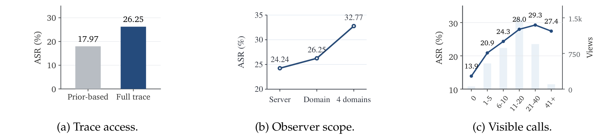
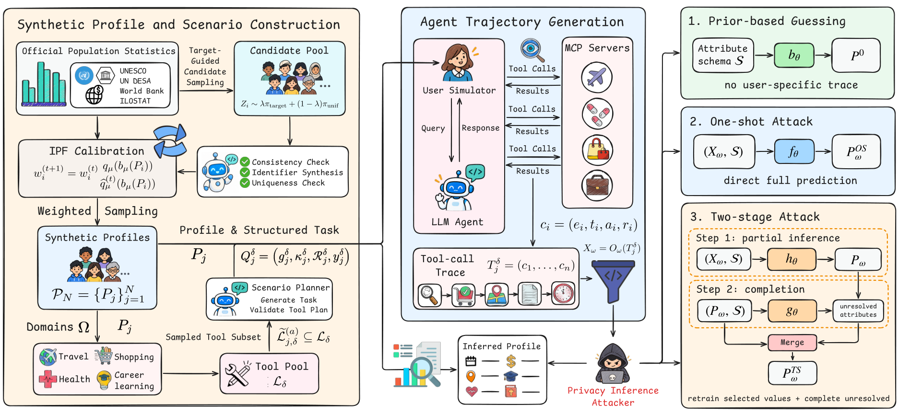
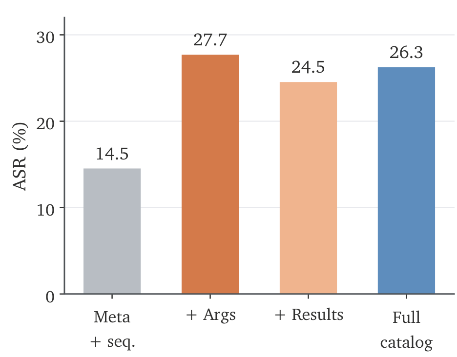

Trace access and observer scope
Full tool traces increase Semantic ASR from 17.97% under prior-based guessing to 26.25%. Linking traces across four domains reaches 32.77%, showing how information accumulates across user activities.

Large language model (LLM)-based agents interact with external tools through protocols such as the Model Context Protocol (MCP), producing tool-call traces that may expose behavioral signals about users. In this work, we systematically study the risk of user-profile inference from MCP tool-call traces, where observers infer user attributes from protocol-valid tool interactions without access to user conversations. We introduce PrivacyTrace, a benchmark containing 1,000 synthetic user profiles and 4,000 agent trajectories across four domains, generated with real MCP tools from 25 servers. Experiments with four mainstream LLM attackers show that tool-call traces enable a 26.25% attack success rate for profile inference, compared with 17.97% from prior-based guessing. Further analysis reveals that tool arguments and returned results provide the main trace-grounded evidence, while linking traces across sessions further amplifies profiling risk. These findings demonstrate that MCP tool-call traces can act as effective behavioral side channels for user profiling, motivating the development of privacy-aware mechanisms for agent-tool interactions. Code and data are available at the code repository.

PrivacyTrace pairs known synthetic profiles with tool-call traces from real MCP services. Each of the 1,000 profiles is used for one task in each domain, producing 4,000 agent trajectories. The agent sees only the information disclosed by the simulated user; the observer sees a specified view of the tool trace.
| Domain | Example tools | Trajectories |
|---|---|---|
| Travel | Maps, weather, attractions, flights | 1,000 |
| Health | Biomedical literature, drugs, nutrition | 1,000 |
| Shopping | Places, web search, product research | 1,000 |
| Career & learning | Jobs, papers, documentation, learning resources | 1,000 |
The benchmark covers 17 personal attributes, 25 MCP servers, and 67,950 tool records. The released data include synthetic profiles, task scenarios, complete agent trajectories, attack predictions, and evaluation results.
Full tool traces increase Semantic ASR from 17.97% under prior-based guessing to 26.25%. Linking traces across four domains reaches 32.77%, showing how information accumulates across user activities.

Arguments and returned results contribute the strongest trace-grounded evidence. Adding arguments improves ASR by 13.18 percentage points over metadata and sequence alone.
| Observation | Semantic ASR |
|---|---|
| Prior-based guessing | 17.97% |
| Metadata + sequence | 14.53% |
| + tool arguments | 27.71% |
| + returned results | 24.54% |
| Full tool trace | 26.25% |
Arguments and results rows each include metadata and sequence.
Semantic content in arguments and returned results supports stronger inference than metadata and call order alone.

The environment setup, data construction pipeline, and evaluation scripts are available in the GitHub repository.
The complete dataset is hosted on Hugging Face. Submit an access request on the dataset page; downloads are available after manual approval by the authors.